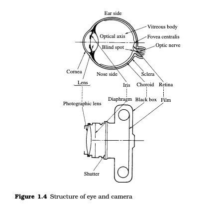
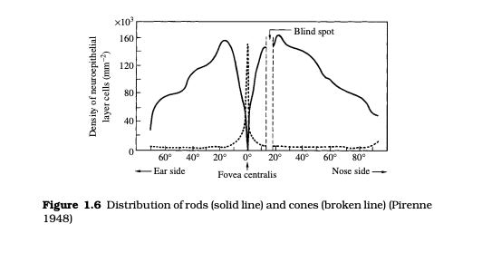
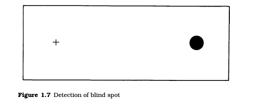

<link rel="stylesheet" href="mechanism.css">
<header>
    <nav class="n">
        <ul>
            
            <li><a href="./contact.html">Contact Us</a></li>
            <li><a href="./services.html">Services</a></li>
            <li><a href="./about.html">About</a></li>
            <li><a href="./index.html">Home</a></li>
           
        </ul>
    </nav>
</header>
<div class="navbar">
    <h1>Light, Vision and Photometry</h1>
  </div>
<div>
<div class="left">
    <a href="./light.html">LIGHT <br></a>
  <a href="./mechanism.html">MECHANISM OF THE HUMAN EYE <br></a>
  <a href="./adaptation.html">ADAPTATION AND RESPONSIVITY OF THE
  HUMAN EYE <br></a>
  <a href="./spectral.html">SPECTRAL RESPONSIVITY AND THE STANDARD
    PHOTOMETRIC OBSERVER <br></a>
    <a href="./definition.html">DEFINITION OF PHOTOMETRIC QUANTITIES <br></a>
    <a href="./photometric.html">PHOTOMETRIC UNITS <br></a>
    <a href="./calculation.html">CALCULATION AND MEASUREMENT OF
        PHOTOMETRIC QUANTITIES  <br></a>
       
    </div>    
    </div>
    <div class="right">
<section id="mechanism">
    <H2>
        MECHANISM OF THE HUMAN EYE
    </H2>
    The visual system is very similar to a photographic system in that
    both respond to light and, in particular, to images. The human
    eyeball is a sphere about 24 mm in diameter, and its mechanism
    resembles that of a camera and photographic film. Figure 1.4 shows
    schematically an eye and a camera.
                    </section>
                    
                    <section>
                        Light incident on the eye induces a  photochemical reaction in
    the retina, which corresponds to the photographic film The nerve
    impulse generated by the reaction is transmitted to the brain to give
    a visual sensation. The retina covers about two-thirds of the internal surface of the eyeball, and is a transparent film about 0.3 mm
    in thickness, with a complicated structure comprising several types
    of cell (Dowling and Boycott 1966). This is illustrated in Figure 1.5.
    The incident light enters the retina in the direction indicated by
    the arrows, and reaches the photosensitive neuroepithelial layer.
    The optic nerve layer, which is located in front of the neuroepithelial layer, performs various types of signal processing. It should be
    noted that the incident light reaches the neuroepithelial layer after
    it passes through the transparent optic nerve layer. <br>
    <details>
        <summary>
           <b> What are rods and cons?</b>
          <span class="icon">👇</span>
        </summary>
        <p>
            The <a href="https://en.wikipedia.org/wiki/Photosensitivity" target="_blank"> photosensitive </a> neuroepithelial layer, which corresponds to
            the fine photosensitive silver halide (e.g., AgCl, AgBr, or AgI) grains
            incorporated in a photographic film, consists of two types of cell.
            These are rods, which perceive brightness or darkness in relatively
            dark environments, and cones which perceive color in relatively
            bright environments. The names ‘rods’ and ‘cones’ are derived from
            the shapes of the cells. There are three types of cone cell, present
            in the ratio of about 32:16:1, which respond to long-, medium- and
            short-wavelength light, respectively. Thus, the eye can be thought of as being constructed of a high-speed black-and-white film (the
            rods) and a medium-speed color film (the cones). <br>
           
        </p>
      </details>
      <details>
        <summary>
           <b> What is external node?</b>
          <span class="icon">👇</span>
        </summary>
        <p>
            There are about a hundred million rods and about seven million
            cones in a human retina. The end of each neuroepithelial cell (the
            hatched portion ) is called the external node and contains a photosensitive pigment. The diameter of the external node
            is between 1 and 2 m for a rod and between 1 and 5 m for a cone.
            It can be seen therefore that the diameter of the external node is
            about the same as that of a photographic silver halide grain, which
            is between 0.05 and 3 m. The human eye has about 60 000 elements per mm2 at the center of the retina, an electronic camera has
            about 20 000, and a color photograph about 30 000. <br>
           
        </p>
      </details>
      
    The distribution of neuroepithelial cells in the retina is shown in
    Figure 1.6 (Pirenne 1948). The cones are concentrated in the vicinity of the optical axis in the fovea centralis. The fovea centralis is
    a narrow portion of the retina, about 1.5 mm in diameter, in which
    approximately 100 000–150 000 cones are concentrated. Maximum
    resolution is therefore achieved in this narrow portion. In contrast
    to the cones, rods are rarely found in the vicinity of the fovea centralis, and are distributed over a wide region of the retina. Because
    the rods, and not the cones, function in dark environments, stars in
    the sky at night are seen more easily obliquely, i.e., with squinting
    eyes. <br>
    The signals generated by the photosensitive pigments in the
    neuroepithelial cells are processed by various cells, shown in
     and the processed signals are then transmitted to
    the brain through about one million optic nerves. Because no 
                    </section>
                    
                    
                    <section>
                      <a href="https://en.wikipedia.org/wiki/Neuroepithelial_cell" target="_blank">  neuroepithelial cell </a> is present in the portion of the retina where
                        the optic nerve penetrates, this portion cannot sense light and is
                        called the blind spot. The blind spot is located at an angle of 15
                        from the line of sight (optical axis) and is about 5 wide. This can
                        be confirmed readily by a visual experiment using Figure 1.7. If the
                        observer fixates his/her right eye on the cross while closing his/her
                        left eye and adjusting the distance between the eye and the cross
                        to about 20 cm, the solid circle disappears from sight. This occurs
                        because the solid circle is imaged on the blind spot.
                    </section>
                    <iframe width="560" height="315" src="https://www.youtube.com/embed/WCAw8we_nDI" title="YouTube video player" frameborder="0" allow="accelerometer; autoplay; clipboard-write; encrypted-media; gyroscope; picture-in-picture; web-share" allowfullscreen></iframe>
                </div>
           